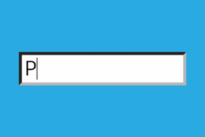

Det finnes mange ulike typer av autorisering. Det mest vanlige og mest brukte er brukernavn og passord. Dette er enkle autoriserings metoder men kan være mindre trygge enn andre metoder.
Her er noen av de mer sikre og vanlige autoriserings typene;
- To-tinnsbekreftelse
- Fingeravtrykk
- Tall- eller mønsterkode
- Bank ID
- ansiktsgjenkjenning
Passord er en hemmelig form for autoriseringsdata for å kontrollere adgang til ressurser. For å forbedre den enkle metoden med brukernavn og passord, kan man stille krav til passordene. For eksempel må du sette minst 8 tegn i passordet, samt bruke en stor bokstav og et tall.
Tilbake til datasikkerhet
Tilbake til startsiden
